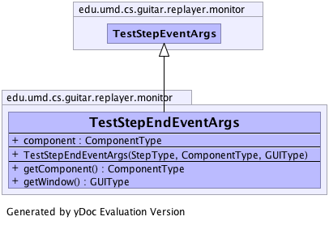

edu.umd.cs.guitar.replayer.monitor
Class TestStepEndEventArgs
java.lang.Object
 edu.umd.cs.guitar.replayer.monitor.TestStepEventArgs
edu.umd.cs.guitar.replayer.monitor.TestStepEndEventArgs
edu.umd.cs.guitar.replayer.monitor.TestStepEventArgs
edu.umd.cs.guitar.replayer.monitor.TestStepEndEventArgs
public class TestStepEndEventArgs
- extends TestStepEventArgs
A wrapper of test step data Info about a testcase step event.
TODO: Should add more application data to collect more results (Bao)
Generated by yDoc Evaluation Version
- Author:
- Scott McMaster (modified by Bao Nguyen)
-
-

|
Field Summary |
edu.umd.cs.guitar.model.data.ComponentType |
component
|
|
Constructor Summary |
TestStepEndEventArgs(edu.umd.cs.guitar.model.data.StepType step,
edu.umd.cs.guitar.model.data.ComponentType component,
edu.umd.cs.guitar.model.data.GUIType window)
|
|
Method Summary |
edu.umd.cs.guitar.model.data.ComponentType |
getComponent()
|
edu.umd.cs.guitar.model.data.GUIType |
getWindow()
|
| Methods inherited from class java.lang.Object |
clone, equals, finalize, getClass, hashCode, notify, notifyAll, toString, wait, wait, wait |
component
public edu.umd.cs.guitar.model.data.ComponentType component
TestStepEndEventArgs
public TestStepEndEventArgs(edu.umd.cs.guitar.model.data.StepType step,
edu.umd.cs.guitar.model.data.ComponentType component,
edu.umd.cs.guitar.model.data.GUIType window)
- Parameters:
step - component - window -
getComponent
public edu.umd.cs.guitar.model.data.ComponentType getComponent()
getWindow
public edu.umd.cs.guitar.model.data.GUIType getWindow()